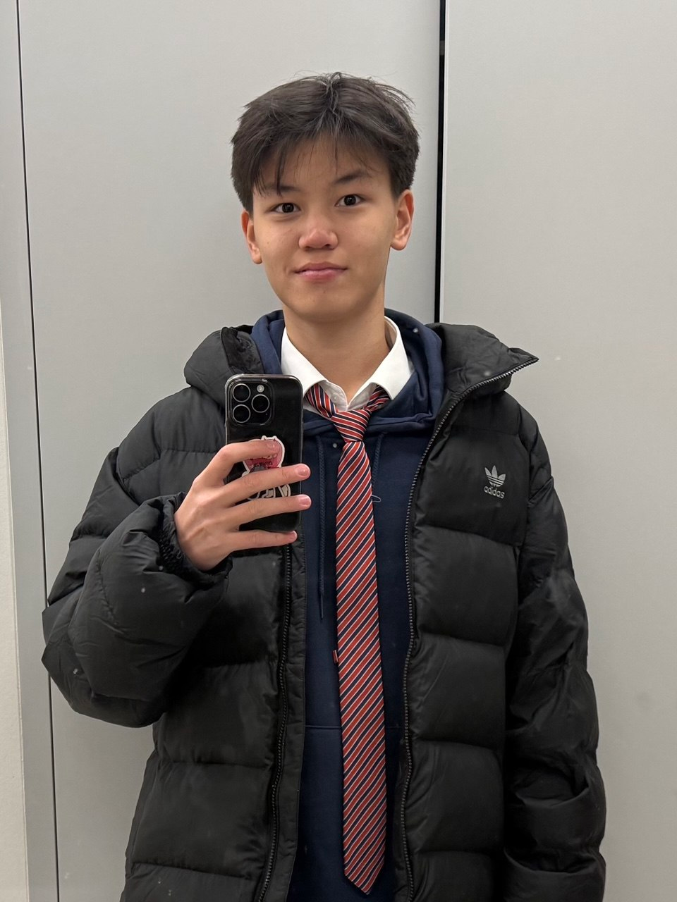

Velnox reads your Gmail and tells you which client to answer today, who's going cold, and what to say — with the reply already drafted.

Founder, Velnox · Astana, Kazakhstan
Same stubbornness that got Velnox into production.
Scan it. Connect your Gmail. Velnox will name the client you've left waiting longest — and draft the reply. If it gets you wrong, tell me and I'll fix it this week.
Looking for my first 10 pilot users · sagindiktar@gmail.com
Scan → usevelnox.com